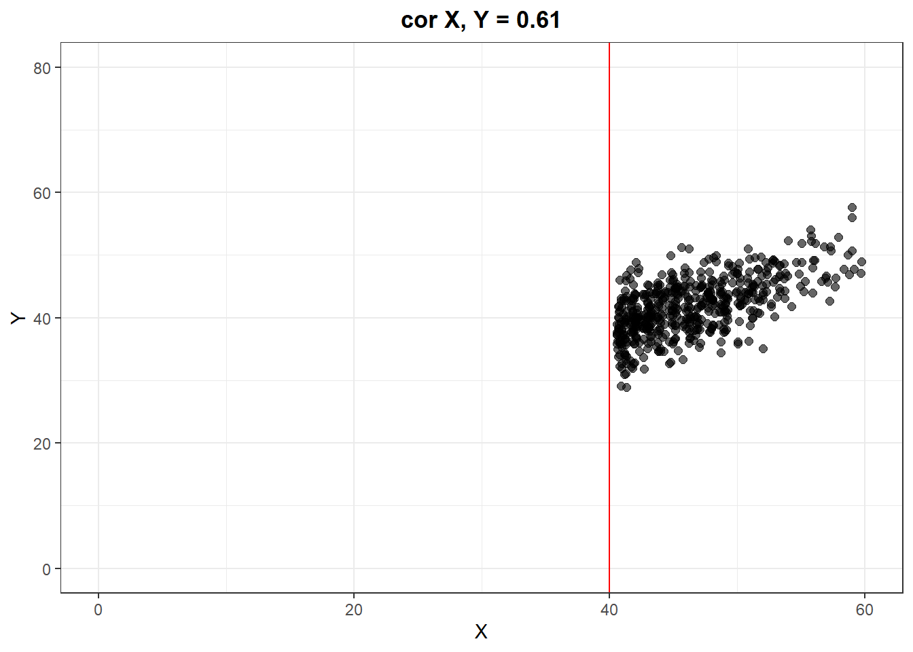
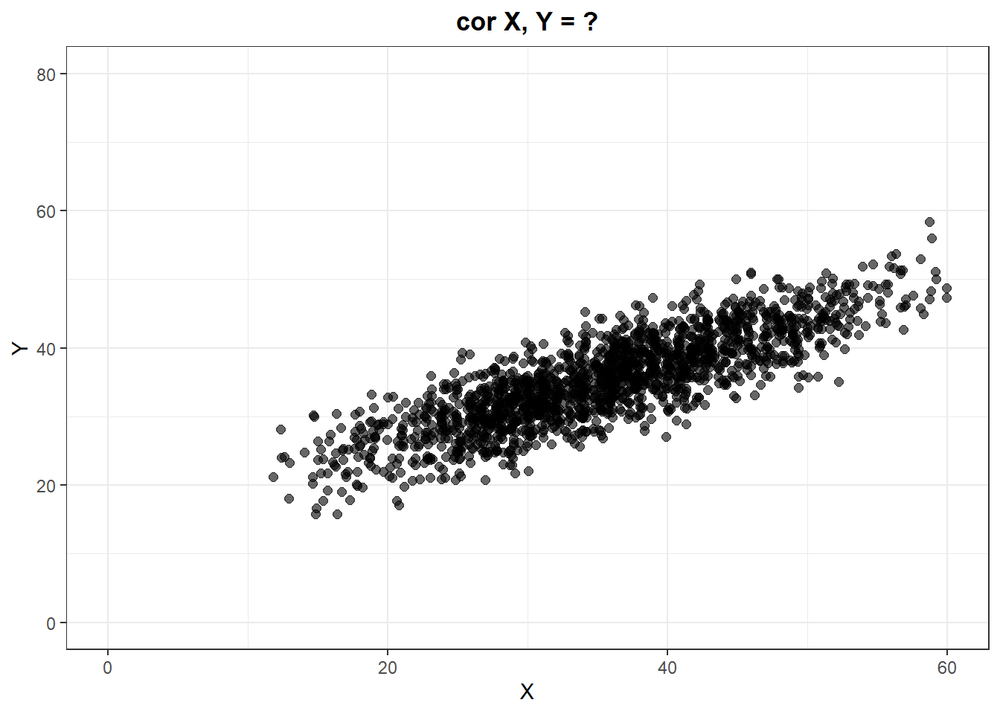

Note: The assignment is due on Nov 8, 2021. Send your code and html/pdf report to dlouha@cs.cas.cz (and to martinkova@cs.cas.cz in copy).
Done.
Done.
Note: If you meet any issues, contact the the TA or the instructor before 8 AM of the due date.
Done.
df <- data.frame(e_split_half, a_split_half, c_split_half, n_split_half, o_split_half, row.names=c("First-second", "Even-odd", "Average", "Worst", "Best"))
colnames(df) <- c("Extraversion", "Agreeability", "Conscientiousness", "Negative Emotionality", "Open-Mindedness")
print(df)## Extraversion Agreeability Conscientiousness Negative Emotionality Open-Mindedness
## First-second 0.8987 0.7978 0.8781 0.8829 0.8656
## Even-odd 0.8919 0.7978 0.8873 0.9183 0.8656
## Average 0.8561 0.8129 0.8736 0.8867 0.8288
## Worst 0.7502 0.6741 0.8002 0.8305 0.6419
## Best 0.9092 0.8670 0.9151 0.9195 0.8869I computed estimates of split-half reliability for each domain separately, because the BFI2 data set is based on the multidimensional Big Five model of personality. The first-second and even-odd methods separate the domains so that the domain facets are equally represented in both groups – for Agreeability and Open-Mindedness these methods also yield equal estimates. Relatively mild differences between the estimates of the first two methods can be found in the other domains – lower first-second estimates could be explained by respondents being more tired while answering the second half of items. All of the average split-half estimates are higher than \(0.8\), which can be interpreted as an overall good split-half reliability of the questionnaire with regards to its domains. Agreeability has the lowest split-half reliability estimates, whereas Negative Emotionality and Extraversion seem to yield the highest estimates.
The first data frame shows a comparison of the estimates of Cronbach’s \(\alpha\) for the respective domains with different methods. The “variance formula” refers to the following basic formula: \(\alpha = \frac{k}{k-1}(1-\frac{\sum V_i}{V_t})\) The covariance matrix row was calculated using this formula: \(\alpha = \frac{k}{k-1}(1-\frac{\sum \limits_{i} \sum \limits_{j} C_{ij}}{V_t})\) I also used the packages psychometric and psych to estimate Cronbach’s \(\alpha\). As can be seen in the data frame, all methods lead to the same result.
The second data frame includes the confidence intervals for Cronbach’s \(\alpha\). Since the estimates for all domains \(> 0.75\), we can interpret their reliability as excellent. However, Cronbach’s \(\alpha\) is not the best estimate of reliability in this case, which is why I also tried to approximate McDonald’s \(\omega\) for all domains with an EFA using the psych package. I think the correct procedure would be to specify the model using SEM, then to perform a CFA and extract the corresponding \(\omega\) values.
rel.original <- psychometric::alpha(BFI2_n)
# number of items in original data
items.original <- ncol(BFI2_n)
# number of items in new data
items.new <- 2 * items.original
# ratio of tests lengths
m <- items.new / items.original
# determining reliability
SBrel(Nlength = m, rxx = rel.original)## [1] 0.9404128# desired reliability
rel.new <- 0.9
# determining test length
(m.new <- SBlength(rxxp = rel.new, rxx = rel.original))## [1] 1.14053# number of required items
ceiling(m.new * items.original)## [1] 14For the purpose of this exercise, I worked with the domain Negative Emotionality. If we doubled the original number of items (\(12\)), reliability would reach \(0.94\), meaning it would increase by approximately \(0.5\). In order to get a reliability of \(0.9\), we would have to add two more items, resulting in \(14\) items overall.
One example of another reliability estimate is test-retest reliability. For test-retest reliability, we would need to collect data with the same inventory from the same respondent sample after a certain period of time (3 months are usually recommended). The estimate of reliability would correspond to the correlation between the respondent scores from the first and second administration. Theoretically, only the measurement error should change. A second example could be parallel forms reliability, which, similarly to test-retest requires another administration on the same subjects. As the name suggests, this method of estimating reliability relies on the administration of a parallel form of the inventory. Both administrations should have the same conditions, the test/inventory forms should have the same kinds of items of equal difficulty. In this specific case, one could use another but very similar inventory based on the Big Five model of personality.
# Total scores for 1st administration
n_new <- data.frame(Score_1=rowSums(BFI2_n))
# Simulate scores for 2nd administration
set.seed(123)
n_new <- n_new %>%
mutate(Z=rtruncnorm(n=1733, mean=17.5, sd=4.6, a=0, b=32),
Score_2=round(0.6*Score_1+sqrt(1-0.6^2)*Z, digits=0))
summary(n_new$Score_2)## Min. 1st Qu. Median Mean 3rd Qu. Max.
## 16.00 31.00 35.00 35.42 40.00 58.00# True test-retest reliability
cor(n_new$Score_1, n_new$Score_2)## [1] 0.8364385# Simulate range restriction
n_new_rest <- n_new %>%
filter(Score_1 > 40)
# Sample test-retest reliability
(r <- cor(n_new_rest$Score_1, n_new_rest$Score_2))## [1] 0.6078483sdr <- sd(n_new_rest$Score_1)
sdu <- sd(n_new$Score_1)
# Correction for test-retest reliability
psych::rangeCorrection(r=r, sdr=sdr, sdu=sdu)## [1] 0.8421021(sdu * r) / sqrt(sdu^2 * r^2 + sdr^2 - (sdr^2*r^2))## [1] 0.8421021ggplot(n_new_rest,
aes(x=Score_1, y=Score_2)) +
geom_point(position="jitter", size=2, alpha=0.6) +
coord_cartesian(xlim=c(0, 60), ylim=c(0, 80)) +
labs(title="cor X, Y = 0.61", x="X", y="Y") +
theme_bw() +
theme(plot.title = element_text(hjust = 0.5, face="bold")) +
geom_vline(xintercept = 40, color="red")
ggplot(n_new,
aes(x=Score_1, y=Score_2)) +
geom_point(position="jitter", size=2, alpha=0.6) +
coord_cartesian(xlim=c(0, 60), ylim=c(0, 80)) +
labs(title="cor X, Y = ?", x="X", y="Y") +
theme_bw() +
theme(plot.title = element_text(hjust = 0.5, face="bold"))
Let’s say we want to determine the test-retest reliability of the Negative Emotionality subscale, but we only manage to collect new data from participants with a relatively high score from the first administration (\(>40\)). The estimate of test-retest reliability we obtain with this restricted sample is ca. \(\rho = 0.61\). Using the rangeCorrection function from the psych package or the Wiberg & Sundström formula, we get a better estimate of the true test-retest reliability (coefficient of stability) – \(\rho = 0.84\).
Your text.